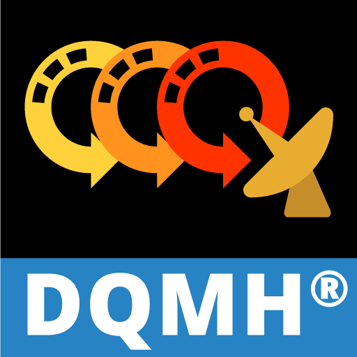

Introduction

The DQMH® Project Template is based on the NI Queued Message Handler Project Template (NI QMH). The DQMH improves the NI QMH by:
- providing safe, event-based message handling and scripting tools, which makes development easier
- encouraging consistent style among different developers in the same project, which improves efficiency
The DQMH provides the greatest benefits in applications employing multiple modules running in parallel that communicate with each other. These different modules can run either with their front panel open or headless (with their front panel closed). The DQMH can also be used for applications that have a single module in which a Tester has the capability of eavesdropping on the different DQMH events and messages (both in development mode and in an executable).
Each DQMH module has a structure similar to a NI Queued Message Handler module, and it has a Test DQMH Module API.vi (also known as the "Tester") to help troubleshoot, debug, and eavesdrop on the communications between the DQMH Module and its calling code. If the developer is creating an application that will employ multiple DQMH modules, the best place to start is with the Project Templates. This is done by clicking Create Project from the Getting Started Window in LabVIEW, and then clicking the DQMH Project Template. If the developer is creating a single DQMH module that will be called by their existing code or used as a stand-alone application, open an existing project and use the Tools>Delacor>Module>Add DQMH Module utility. Starting with DQMH 4.1, there is also a Sample Project Template for the DQMH version of the Continuous Measurement and Logging (CML DQMH) Sample project. Create a copy of this sample project by clicking Create Project from the Getting Started Window in LabVIEW, and then clicking the CML DQMH Sample Project Template.
This documentation assumes that you are familiar with Producer/Consumer design pattern and with the NI QMH Project Template. If you are not familiar with these topics, the NI QMH documentation can be found by clicking Create Project from the Getting Started Window in LabVIEW and then clicking the More Information link in the NI QMH project description. You can also create a project based on this template, which will include a copy of the documentation.
DQMH was originally created and maintained by Delacor, with Fabiola De la Cueva being the chief architect.
In 2021, Delacor transferred all rights and responsibilities to the DQMH Consortium, LLC
Change History
- Version 6.0.0.0:
- Updated Introduction with the new DQMH logo and added extra information on the transfer from Delacor to the DQMH Consortium
- Updated video link to Validating an Existing DQMH Module that shows the new features for DQMH 6.0 and how to validate an existing DQMH 5.0 project to match DQMH 6.0
- Added section on Find Broadcast Event Frames
- Added section on new error handling VIs called Additional Error Information
- Changed references to "National Instruments" to NI
- Updated contact email as info@dqmh.org
- Renamed and updated the What is New in DQMH with all the new features for DQMH 6.0
- Added a new section for Feature Requests
- Version 5.0.0.0:
- Updated video link to Validating an Existing DQMH Module that shows the new features for DQMH 5.0 and how to validate an existing DQMH 4.2 project to match DQMH 5.0
- Added section on What is New on DQMH
- Added section on How to Learn DQMH
- Clarified that the Application is implemented using a State Machine in the Getting Started section
- Added DQMH as alternative to XControls in the Use Cases section
- Added clarification at the beginning of the Nomenclature section that it is a list of links to other sections in the document
- Updated figures and description for DQMH Cloneable modules in the DQMH Singleton Module vs Cloneable Overview section in this document. Specifically added in blue the new sections of the Cloneable module and an explanation of what they are there for
- Added note with some improvements developers can make to projects created from the CML DQMH Sample Project
- Added to DQMH in LabVIEW Real Time that starting with DQMH 5.0 we do support both DQMH Singleton and Cloneable modules in Real Time
- Added reference to How to Learn DQMH in the Related Information section
- Changed this Change History section to start with the latest version at the top of this section
- Added section for Third Party Products
- Version 4.2.0.0:
- Added video to Validating an Existing DQMH Module that shows the new features for DQMH 4.2 and how to validate an existing DQMH 4.1 project to match DQMH 4.2
- Updated the Adding a New DQMH Module from a Custom Template section to describe the new Delacor>DQMH>Module>Create DQMH Module Template... menu option and the change in disk location for the DQMH Template Example
- Updated the Creating a New DQMH Event section
- To describe the new Reply Payload Arguments window when creating a Request and Wait for Reply event
- To include the new check box to create a button for the API Tester when creating a new Request
- Updated images to include the new broadcast glyph on the bottom corner of DQMH Broadcast VIs
- Renamed the section "Modifying this Template" as DQMH Productivity Tools
- Version 4.1.0.0:
- Added a new section for the newCML DQMH Sample Project to the Shipping Examples and Integration with TestStand section
- Added a new section for the new feature Converting an Existing DQMH Event
- Updated Round Trip behavior description in the Creating a New DQMH Event section
- Added a new section for Integrating DQMH Unit Tests with InstaCoverage
- Replaced the XML contents of the Metadata in the Adding a New DQMH Module from a Custom Template with an image of the code and indications of where to find the example file to copy its contents from there. Some developers reported that copying the code directly from this document would result in errors.
- Updated new menu organization going from having all the tools within the Delacor>DQMH> menu to having four menus: Delacor>DQMH>Event, Delacor>DQMH>Module, Delacor>DQMH>Real-Time Tools, and Delacor>DQMH>Testing Tools
- Updated menu images with new menu organization at Modifying this Template, DQMH in LabVIEW Real Time, DQMH API Tester for RT
- Version 4.0.0.0:
- Added a video to Validating an Existing DQMH Module section showing how to upgrade a DQMH 3.1 project to 4.0.
- Added section for DQMH for RT including new embedded videos
- Added section for creating DQMH Unit Tests including new embedded videos
- Added information on how to use absolute paths instead of relative paths when Adding a New DQMH Module from a Custom Template
- Added embedded videos with real life examples of applications implemented using DQMH in the Use Cases section.
- Updated TestStand examples video in section TestStand Examples
- Added new examples video in section LabVIEW Examples
- Version 3.1.0.1: Corrected paths in Adding a Adding a New DQMH Module from a Custom Template to include the Delacor folder after the Source folder.
- Version 3.1.0.0: Added note in Adding a New DQMH Module from a Custom Template to include the DQMH Example Template that ships with the toolkit.
- Version 3.0.0.1: Converted documentation to hnd/html. Added embedded videos for html and chm versions.
- Version 3.0.0.0: Expanded Nomenclature section and added documentation for new DQMH features introduced with DQMH 3.0:
- Version 2.1.0.3: Added link to DQMH Best Practices document.
- Version 2.1.0.2: Published documentation at: delacor.com/dqmh-documentation. Updated images to reflect DQMH 2.1 version. Added description of what “DQMH Module Main” refers to in the Nomenclature section. Clarified the titles for the shipping examples and provided a link to skip TestStand sections if not using it. Added links at the end of each section to go back to the Table of Contents.
- Version 2.0.0.0: Added section on how to use the new Rename DQMH Module utility. Updated images. Fixed typos.
- Version 1.0.0.1: DQMH documentation for first public release
Use Cases
The DQMH template is useful for applications where multiple tasks occur in parallel, often at different rates. It is also useful when multiple instances of the same Front Panel are needed (this requires using a cloneable DQMH Module). For example, consider an application that controls a single temperature chamber and needs to log data from multiple units under test (UUTs). A cloneable DQMH Module would be used to implement a single UUT and a singleton DQMH Module would be used to implement the temperature chamber.
The DQMH template can also be used to create custom controls and indicators that will be embedded in a Subpanel in another VI. DQMH modules are a good alternative to XControls where the Main.vi has the implementation for the control.
The Tools>Delacor>Add DQMH Module utility can add individual DQMH Modules to existing projects. This is useful for applications where a continuous running process needs to be added and the rest of the code needs to communicate with this process. For example, consider an application where communication with a serial instrument needs to poll the serial port continuously waiting for a series of commands to be received. A singleton DQMH module could implement the communication with the instrument. The existing application could start this singleton DQMH Module and register to listen to the serial port commands. The Test DQMH Module API.vi could then be used to eavesdrop on the communication between the Singleton DQMH Module and the rest of the code as well as a vehicle to test the instrument connected to the serial port as well.
The Tools>Delacor>Add DQMH Module utility can also be used to add a new DQMH module to a new project where the DQMH is intended to be the standalone application.
Another use of the DQMH Module template is for teams with different levels of proficiency. The DQMH Module could be designed and implemented by one team member, and others with less LabVIEW familiarity could just call the DQMH Module API VIs in their code, without having to understand how the DQMH Module itself is implemented.
Here are some videos of presentations the Delacor team has given on real world examples using DQMH.
The following video is from a presentation we gave at NI Week 2017 where we created an application from scratch to executable in less than one hour. More details about this presentation at bit.ly/rapidDQMH
The following video is from a presentation we gave at NI Week 2015. Starting at minute 29:55 the video describes how we modeled and implemented the application using DQMH modules.
DQMH Background
Implementing communication between DQMH modules using events is based on the concepts presented by Justin Goeres during CLA Summit 2011 and NIWeek 2011 (more information here). The main modifications to Justin’s approach were (1) changing the nomenclature from Private/Public events to Request/Broadcast events, and (2) using the NI QMH as the basis for the modules instead of the JKI State Machine.
How to Learn DQMH
There are different ways to learn DQMH.
Self-Paced
This documentation has several sections you can use to learn DQMH. We are providing some suggestions depending on how you like to learn.
Prerequisites for All Learning Paths
- An understanding of Queues. Specifically, familiarity with Producer/Consumer design pattern and Queued Messages Handlers in general. Check out the documentation for the NI QMH.
- An understanding of User Events, also known as Custom Events or Dynamic Events.
Learning Path 1: Using a Generic Project Template
- Familiarize yourself with the Overview section of this documentation. This section will provide the nomenclature, the DQMH Project Template Structure as well as the differences between Singleton and Cloneable modules
- Follow the steps in the Running the DQMH Project Template section of this document
- Create some DQMH events. For example, create a new Request named Change Front Panel Color for the Singleton module. Add a color box as the argument. On the API Tester, create a color box control that will be fed to the Change Front Panel Color VI created by the DQMH tools. Implement the change of the front panel color directly in the Main.vi for the Singleton module. Run the Singleton API Tester and observe how the color of the Singleton Module changes when you change the color from the API Tester
- Learn how you can use the Tester VI to troubleshoot your modules and applications as the application is running
- Get the DQMH Framework badge. One of the learning badges offered by NI
Learning Path 2: Using a Sample Project
- Familiarize yourself with the Overview section of this documentation. This section will provide the nomenclature, the DQMH Project Template Structure as well as the differences between Singleton and Cloneable modules
- Create a new Project from the CML DQMH Sample Project (available in the Create Project dialog launched from the Getting Started window). Review the CML DQMH Sample Project section of this documentation
- You can compare and contrast the CML DQMH Sample Project with the Continuous Measurement and Logging Sample Project that ships with LabVIEW and it is also available in the Create Project dialog
- Look at ways you can improve your CML DQMH project. For example, the project couples all the contents by all sharing the Settings Editor. Instead, try to separate the editor from the individual DQMH modules. What if each DQMH module would own their own configuration and just send their configuration page to the Configuration Editor? Before making any changes, make sure you model your solution using the tables and models recommended in Tips and Tricks for a Successful DQMH Based Project
- Get the DQMH Framework badge. One of the learning badges offered by NI
Learning Path 3: Using DQMH Modules Generated by Others
- Familiarize yourself with the Overview section of this documentation. This section will provide the nomenclature, the DQMH Project Template Structure as well as the differences between Singleton and Cloneable modules.
- Review the DQMH shipping LabVIEW Examples section of this documentation
Learning Path 4: Using DQMH Modules from TestStand
- Familiarize yourself with the Overview section of this documentation. This section will provide the nomenclature, the DQMH Project Template Structure as well as the differences between Singleton and Cloneable modules.
- Review the DQMH shipping TestStand Examples section of this documentation
Instructor-Led On line
If you are interested in remote, one-on-one or group training sessions for your team, contact us at info@dqmh.com for a customized quote.
Instructor-Led On site
If you are interested in one-on-one or group training sessions for your team at your location, contact us at info@dqmh.com for a customized quote.
Other Learning Resources
- Other DQMH videos bit.ly/DelacorQMH
- What made DQMH click for you? post at the Delacor Toolkits Forum at NI
- Chapter 5 "Why Would You Want to Use a Framework?" in Jennings, Richard, and Fabiola De La Cueva. LabVIEW Graphical Programming. McGraw-Hill Education, 2020. Fabiola De la Cueva is Delacor's founder and the lead architect for DQMH.
- Tom's LabVIEW Adventure DQMH - Tutorial Series (Delacor Queued Message Handler). Tom is a friend of Delacor and he made this series as a contribution to the LabVIEW Community. He did consult with Delacor but this work is independent of Delacor, LLC.
What is New in DQMH?
Find out more details at the Release Notes for DQMH 6.0
Release notes for previous DQMH versions
NOTE: DQMH 6.0 is the last release of DQMH to support LabVIEW 2014
We will cover the major features here:
Upgrading your existing code created with previous versions of DQMH to DQMH 6.0
- The best way to identify how the new features in DQMH 6.0 affect your existing projects is to validate them. The Validating an Existing DQMH Module section includes a video demonstrating upgrading a DQMH project created with DQMH 5.0 to DQMH 6.0.
Error Management
- Errors generated with the EHL, MHL, and helper loops will contain additional information in the error source string describing the origin of the error. For example, errors generated in the MHL will include the name of the case structure frame that was the source of the error. See the Additional Error Information for more details
New Tools
- In LabVIEW 2015 and later, there is a new Find DQMH Broadcast Event Frames right-click option on Broadcast subVI calls that will discover event structure frames within all VIs in the current project that are registered for that particular broadcast
Upgrading your existing code created with previous version of DQMH to DQMH 6.0
- If the Validate DQMH Module tool is unable to upgrade an existing Start Module VI to the Asynchronous Run approach used in DQMH 5.0 and later, it will create a new Start Module2 VI that the developer can use as a starting point
Request and Wait for Reply
- Request and Wait for Reply VIs now return payload arguments as individual outputs on the connector pane of the VI instead of as a single cluster
Cloneable Running as Singleton
- A cloneable module running as singleton now has a more robust mechanism for determining when the module has completely shut down. DQMH 6.0 adds code that ensures the Stop Module.vi does not exit until the Main.vi is no longer reporting its state as Running. This prevents issues when running the cloneable as singleton and starting/stopping the module in rapid succession
Stopping Modules
- When closing a module Main.vi, the code now calls the Update Module Execution Status with the Running flag set to FALSE. Any code registered to listen to this broadcast, like the API Tester, will turn off the Module Running? LED when the module stops
- Stop Module.vi now executes even if there is an error coming through its error input
API Testers
- The code that updates the status string on the front panel for Broadcast events is now automatically scripted when the developer creates a new broadcast event
Validate DQMH Module
- A new validate test was added that detects frames in the Event Handling Loop that contain bundle functions with one or more inputs unwired. A typical error when the developer adds new parameters to an argument cluster and forgets to update the event case that handles the event to bundle all the inputs
DQMH Templates
- Creating a new DQMH module from a template now works even if the template exists in the project
DQMH CML Project Template
- Improved the state management in the logging module
Getting Started
A description of how to get started with DQMH can be found on the video "DQMH Getting Started" found at: bit.ly/DelacorQMH
The video is embedded below, followed by a description of what can be seen at different times in the video:
Getting Started with DQMH video
This video shows where to find the documentation for the Delacor Queued Message Handler toolkit, how to create a project from the template and where to find the shipping examples. The video explains what a Singleton vs Cloneable module is and how to run the testers and the individual modules.
0:00 Where to find Documentation
0:30 Create a DQMH from Project Template
1:20 Add a new DQMH Module to an existing project
1:40 Where to find the DQMH shipping examples
2:05 DQMH Project Template structure
3:40 Nomenclature: Request, Broadcast events and DQMH Module design pattern
5:12 DQMH as a stand alone module or part of a larger application
5:28 Steps to add a new DQMH Module
6:43 Module structure
8:30 Request event
8:58 Broadcast event
16:56 Shipping examples: Simple VIs calling DQMH public API (singleton)
19:50 Shipping examples: Thermal chamber with DUT (singleton & cloneable)
20:25 Shipping examples: Thermal Chamber with Multiple DUTs (singleton & cloneables)
21:30 Cloneable DQMH Module
24:20 How to create a DQMH Event
31:18 API tester tests errors when module is not running
An application that uses the DQMH will have one or more DQMH modules. Each DQMH module will have a Main.vi that is a version of the Producer/Consumer design pattern, where the user interface (producer) produces messages and the tasks (consumers) consume them. However, in the DQMH template, you can also produce messages from other DQMH modules or other VIs.
This template includes the following:
- 1 singleton DQMH module (can have only one instance of its Main.vi running at any given time)
- 1 cloneable DQMH module (can have one or multiple instances of its Main.vi running in parallel)
- 2 API testers, one for each DQMH module
- 1 sample application implemented using a State Machine to show that the code that calls a DQMH module does not have to be a DQMH module itself.
If you would like to add modules to an existing project, then use the Tools>Delacor>Add DQMH Module utility in your existing project.
System Requirements
LabVIEW Base, Full, or Professional Development System 2014 or later
DQMH 6.0 is the last release of DQMH to support LabVIEW 2014
Getting Help
The DQMH toolkit is supported via the online forum found at ni.com: ni.com communities: DQMH Consortium Toolkits
Feature Requests
You can add new DQMH feature requests via the online DQMH Feature Requests found at ni.com: ni.com communities: DQMH Consortium Toolkits Feature Requests
Overview
The video below is called "DQMH Decisions Behind the Design" and can be found at: bit.ly/DelacorQMH.
DQMH Decisions Behind the Design video shows a presentation given at NI week 2016 where Fabiola De la Cueva gave an overview of what the DQMH is, the differences between DQMH and the NI QMH and some of the decisions behind DQMH design.
To understand this section of the documentation better, look at the corresponding Main.vi diagram in the NI QMH documentation to contrast the differences with the DQMH Module Main.vi.
Here are the primary differences:
DQMH Event: LabVIEW code that carries custom data throughout the application. Implemented using Custom Events (also known as User Events). These events allow different parts of an application to communicate asynchronously when the events are programmatically generated. An event structure handles both types of events: end user interaction with front panel (i.e., a value change event on a control) and programmatically generated user events. More details can be found on the LabVIEW Help entry for User Events (or custom events). A DQMH can send events to multiple Event Structures and multiple locations in the code can send events to a DQMH module. DQMH Events are many to many.
There are two types of DQMH Events:
Request: Code that fires an event requesting the DQMH Module Main.vi to do something. Multiple locations in the code can send events to the DQMH module. Request Events are many to one. Requests are asynchronous events, the code that fires the event does not wait for a response from the DQMH Module Main.vi. Creating a Request and Wait for Reply type of event makes the Request synchronous.
Broadcast: Code that fires an event broadcasting that the DQMH Module Main.vi did something. Multiple event structures can register to handle the Broadcast Events. Broadcast Events are one to many.
DQMH Module Main: Each DQMH Module has a Main.vi, the full name for the Main.vi is DQMH Library Name:Main.vi. For example My Singleton Module.lvlib:Main.vi or My Cloneable Module.lvlib:Main.vi. This document refers to this VI as “DQMH Module Main”. This VI can be renamed without breaking any of the DQMH scripting tools.

The DQMH Module Main.vi repeatedly performs the following steps:
- A user interacts with the front panel, causing the Event structure in the Event Handling Loop (EHL) to produce a message. LabVIEW stores the message in a queue.
- The DQMH Module Main.vi also registers to listen to requests sent by other VIs. Another VI requests that the DQMH module do something, causing the Event structure in the EHL to produce a message. LabVIEW stores the message in a queue.
- The Message Handling Loop (MHL) dequeues a message from the message queue.
- The message is a string that matches one of the subdiagrams of the Case structure in the MHL. Therefore, reading the message causes the corresponding subdiagram of the Case structure to execute. This subdiagram is called a "message diagram" because it corresponds to a message.
- Optionally, the message diagram produces another message, storing it in the message queue.
- The DQMH Module Main.vi can optionally broadcast an event to other VIs that are registered to listen to them.
- In the NI QMH the EHL only registers to listen to the Stop message. In the DQMH the EHL registers to listen to all the request events.
- The DQMH Module Main.vi has Admin code that manages whether the module is a single instance (singleton) or it can be called multiple times in parallel (cloneable).
Notes:
- The EHL is the producer loop. The MHL is the consumer loop. These loops run in parallel and are connected by the message queue, which facilitates communication between the loops.
- The message queue is a LabVIEW queue that stores messages for consumption. The two loop architecture allows the EHL to receive external requests or user interactions and send them as messages to this queue while the MHL may be busy consuming previous messages. Each message queue belongs to a single MHL. Note that in the DQMH the VIs that manage the queues are not copied to the project like in the NI QMH. In the DQMH the queues are wrapped in a class and the managing VIs are stored in vi.lib. If the developer is comfortable with LabVIEW Object Oriented Programming, she can choose to override some of these VIs and create his own Message Queue class.
- Every iteration of the MHL reads the message at the front of the message queue and then executes the corresponding message diagram. Although the MHL primarily consumes messages, it also can produce them.
- Each loop handles errors using a loop-specific error handler subVI. If the DQMH Module Main.vi encounters an error in the MHL, LabVIEW displays an error message. These VIs are also wrapped in the DQMH Queue class and reside in vi.lib. If the developer is comfortable with LabVIEW Object Oriented Programming, she can choose to override some of these VIs and create his own Message Queue class.
- Unlike the NI QMH template that encourages having an MHL for each task, the DQMH encourages having a new DQMH Module per task. With the DQMH scripting tools, the developer can select Tools>Delacor>DQMH>Module>Add New DQMH Module… to quickly add a new module to his project.
- Notice the Data cluster in the above diagram. This cluster contains data that each message diagram in the MHL can access and modify. In this template the cluster is defined as a typedef (Module Data–cluster.ctl). Each typedef belongs to a single DQMH module and should only be modified by code in Main.vi.
Test Module API.vi: The DQMH also has a Test Module API.vi for each DQMH module. This document refers to this VI as “Tester”. This provides a convenient way to test all the request and broadcast events implemented by the DQMH Module. The Test Module API.vi gets added when the developer selects Tools>Delacor>DQMH>Module>Add New DQMH Module…, and it tests the request and broadcast events that come with a DQMH Module.

The tester for singleton DQMH Modules registers to listen to the broadcasts from the DQMH Module Main.vi and handles each broadcast event in the event structure. When the tester stops, the last request to be sent is to stop the module (in case it was not stopped earlier). It is important to execute that last request to avoid leaving the DQMH Module Main.vi running.
One of the advantages of the DQMH Module Main.vi design is that it can run headless. Another advantage is that the tester can be used as a “sniffer” to monitor the status of a DQMH module that is already running.
The Core Requests and Broadcasts that come with a DQMH Module are:
- Show Module Panel – By default the module does not show the front panel of its Main.vi when it is started. Execute this request to show the front panel of the DQMH Module Main.vi. This request cannot be removed via Tools>Delacor>DQMH>Event>Remove DQMH Event….
- Hide Module Panel – Execute this request to hide the front panel of the DQMH Module Main.vi. This request cannot be removed via Tools>Delacor>DQMH>Event>Remove DQMH Event….
- Get Module Execution Status – Execute this request to request the DQMH Module Main.vi to report its current execution status via the Update Module Execution Status broadcast. This request cannot be removed via Tools>Delacor>DQMH>Event>Remove DQMH Event….
- Show Diagram – Execute this request to show the block diagram of the DQMH Module Main.vi. This request does not work in executables. This request can be removed via Tools>Delacor>DQMH>Event>Remove DQMH Event….…
- Do Something – Execute this request to tell the DQMH Module Main.vi to do something. The Main.vi then will broadcast that it did something. This request can be removed via Tools>Delacor>DQMH>Event>Remove DQMH Event….
- Do Something Else – Execute this request to tell the DQMH Module Main.vi to do something else. The Main.vi will display the payload received. This request can be removed via Tools>Delacor>DQMH>Event>Remove DQMH Event….
- Do Something Else and Wait for Reply – Execute this request to tell the DQMH Module Main.vi to do something else and return the reply immediately. The reply is not returned via a broadcast. This type of event is useful when the developer requires a synchronous message. This request can be removed via Tools>Delacor>DQMH>Event>Remove DQMH Event….
- Stop Module – Execute this request to stop the DQMH Module Main.vi. This request cannot be removed via Tools>Delacor>DQMH>Event>Remove DQMH Event….
Note: Deselect the Include “Do Something” events in new module? option when creating a new DQMH module to exclude the “Do Something” events described above.
- Module Did Init – The DQMH Module Main.vi broadcasts that it initialized without issues. This broadcast cannot be removed via Tools>Delacor>DQMH>Event>Remove DQMH Event….
- Did Something – The DQMH Module Main.vi broadcasts that it did something. This broadcast can be removed via Tools>Delacor>DQMH>Event>Remove DQMH Event….
- Status Updated – The DQMH Module Main.vibroadcasts a new status. This broadcast cannot be removed via Tools>Delacor>DQMH>Event>Remove DQMH Event….
- Error Reported – The DQMH Module Main.vi broadcasts that an error occurred. This broadcast cannot be removed via Tools>Delacor>DQMH>Event>Remove DQMH Event….
- Module Did Stop – The DQMH Module Main.vi broadcasts that it did stop. This broadcast cannot be removed via Tools>Delacor>DQMH>Event>Remove DQMH Event….
- Update Module Execution Status – The DQMH Module Main.vi broadcasts whether it is currently running, this is used when the Start Module.vi executes and the module Main.vi is already running. This broadcast cannot be removed via Tools>Delacor>DQMH>Event>Remove DQMH Event….
Note: Deselect the Include “Do Something” events in new module? option when creating a new DQMH module to exclude the “Did Something” event described above.
Nomenclature
The following is a list of links to the different areas in this documentation where each item is defined.
DQMH Project Structure Overview

The Delacor QMH project template (available in the Create Project dialog launched from the Getting Started window) has the following components:
- Testers that exercise the public API of the DQMH modules in the project. The Testers register for the broadcast events fired by the DQMH Module Main.vi and fire request events that will be acted upon in the DQMH Module Main.vi.
- Each DQMH module has its own project library (lvlib). This facilitates having the same icon header for all the members of the library and specifies which VIs are public and which VIs are only used by the library itself.
- Each DQMH module has a Public API virtual folder that lists the VIs that can be called by VIs outside the library.
- Within the Public API folder there is a Requests virtual folder that lists all the VIs wrapping the firing of the requests that can be sent to the DQMH Module Main.vi
- In order to start a DQMH Module, two VIs need to be called: Start Module.vi and Synchronize Module Events.vi. These two VIs take care of launching the DQMH Module Main.vi as well as making sure the DQMH Module Main.vi has created its own request and broadcast events before the calling VI can fire or register to listening to broadcast events.
- The Obtain Broadcast Events for Registration.vi can be used when the calling VI is not ready to start the DQMH Module Main.vi or it expects the DQMH Module Main.vi to have been started by another module. The Obtain Broadcast Events for Registration.vi will have the broadcast events if the DQMH Module Main.vi has already started or it will have empty references and it can be used to declare the event reference type for registration.
- The DQMH Module Main.vi is a private VI. This encourages developers to use the public API to interact with the DQMH module.
- The calling code can be another library or simple VIs. In the DQMH project template a Simple State Machine application is used to call the singleton and cloneable DQMH modules.
- The Build Specification for an executable that uses Application.lvlib:Main.vi as the startup VI.
Notes:
- The DQMH Module Main.vi creates its request and broadcast events to ensure that even if the calling VI leaves memory the references are still valid. This feature of the DQMH module facilitates calling the DQMH modules via TestStand as well as easily defining the lifetime of a given module’s event references. The combination of Start Module.vi and Synchronize Module Events.vi ensures that the DQMH Module Main.vi is ready to receive requests and the calling VI is ready to receive broadcasts.

- The code that calls the DQMH module can be very simple, not even needing an event structure (especially if the calling VI does not care about broadcast events or is only calling request and wait for reply events). Refer to the Thermal Chamber Control example available from the Help>Find Examples…>Directory Structure>DelacorDelacor QMH>DQMH Fundamentals – Thermal ChamberDQMH Fundamentals – Thermal Chamber.lvproj >> Thermal Chamber Controller.vi for an illustration of this approach.

- If the DQMH Module libraries are locked (right click the module .lvlib and choose Properties>Protection), only the public VIs appear in the Project Explorer window. This can be useful when sharing code with other members of the team to highlight the VIs that they will be using in calling code.

DQMH Singleton Module vs Cloneable Module Overview
A Singleton DQMH module can have only one instance of its Main.vi running at any given time. Every time the Start Module.vi is called, the same DQMH Main.vi instance is used.
A Cloneable DQMH module can have one or multiple instances of its Main.vi running in parallel. DQMH 3.0 added code for cloneable modules to be executed as singletons. If the cloneable is running as a singleton, the same instance will be returned every time Start Module.vi is called (Module ID = 0). If it is running as a cloneable, the cloneable module assigns a new Module ID number to each new instance that is started when calling the Start Module.vi.
The calling code needs to provide the Module ID as an input to every request and broadcast VI. The event structure inside the EHL in the cloneable DQMH Module Main.vi has to determine if a request event was sent specifically to that clone before enqueuing the message to the MHL. A Module ID value of -1 means that the event was intended for all instances of the cloneable module.

A cloneable DQMH module library has a folder called Multiple Instances; this folder contains the Action Engine that manages the different instances of the module.

- The cloneable DQMH module comes with a group of VIs to update a Module ID ring that can be used in the Tester or in the Application code to address the different instances of the module.
- Since the DQMH Module Main.vi owns the lifetime of the request and broadcast events, code is needed to determine if the first instance can close. Before stopping, the DQMH Module Main.vi checks to see if it was the first instance of the module that was launched (and hence, the owner of the event references). If it was the first instance launched, then the module will exit both EHL and MHL loops and hold in the Close.vi waiting for all the other instances to close. The VI continues to run (with its panel hidden) until it is the last instance running, at which point it destroys the event references and stops.
- The Clone Registration AE.vi is the action engine that manages all the DQMH cloneable module instances.
- These VIs are the public API for the Clone Registration Action Engine and are used for the following tasks:
- Initialize the clone registry
- Add a new clone to the registry
- Remove a clone from the registry when it stops
- List all the available clones
- Check if a module was the first clone to be registered
The Clone Registration functionality resides in a library with a Public API, which allows the developer to implement the registry with a different underlying mechanism besides an action engine if she so desires.
- A simple tester is included to verify that the Clone Registration AE.vi works as expected.
- DQMH 5.0 modifies how the DQMH modules are launched. DQMH now uses Start Asynchronous call instead of the Run VI Method. This change adds a VI Reference Management which is another action engine that manages the lifetime of the VI reference. Open VI Reference requires root loop access. By keeping VI reference open, subsequent calls to start module for that cloneable module do not require root loop access.
- DQMH 5.0 replaces the code that used to wait for the last clone with a named notifier. This notifier fires when the last clone running stops. Clones share their DQMH event references. The first DQMH clone to start owns the event references, and when it stops, it waits until the last clone stops before destroying the shared references. See 2. above.
Additional Error Information
In DQMH 6.0 and later, errors generated by loops in the DQMH Main VI contain additional information that can be useful in diagnosing the cause of those errors. For example, when the ‘Simulate MHL Error’’ message generates an error in the DQMH project template, here is the error information that is returned:
Error code 5001 source: My Singleton Module.lvlib:Main.vi<ERR> Simulated error originating at Message Handling Loop in My Singleton Module <b>Complete call chain:</b> My Singleton Module.lvlib:Main.vi My Singleton Module.lvlib:Main.vi.ACBRProxyCaller.45000255<DQMH>MHL Frame: Simulate MHL Error</DQMH> Additional Information: MHL Frame: Simulate MHL Error
Note the bold text… the error cluster returned the name of the MHL frame that generated the error. Similarly, if the EHL returns an error via the ‘Simulate EHL Error’ message, here is the error information that is returned:
Error code 5000 source: My Singleton Module.lvlib:Main.vi<ERR> Simulated error originating at Event Handling Loop in My Singleton Module <b>Complete call chain:</b> My Singleton Module.lvlib:Main.vi My Singleton Module.lvlib:Main.vi.ACBRProxyCaller.45000255<DQMH>Event Handling Loop</DQMH> Additional Information: Event Handling Loop
The DQMH Palette includes Error Handler VIs for the EHL, MHL, and Helper Loops:

There is also a DQMH Validate Tool test that will return a failure if you are not calling the appropriate error handler VI within a particular loop (for example, if you call the MHL error handler VI inside a helper loop).
If you want to specify a custom debug message to override the default EHL/MHL behavior, you can call a Property Node with the Error Debug property prior to calling the Error Handler VI:

For convenience, the Error Debug string is provided as an input to the Helper Loop error handler VI:

Shipping Examples and Integration with TestStand
Note: The shipping examples do not require TestStand.
Note: For each TestStand example, there is a similar example VI.
- If using TestStand, go to TestStand Example 1: Thermal Chamber Controller Example.seq.
- If NOT using TestStand, go to LabVIEW Example 1: Thermal Chamber Controller Example.vi.
- If you are interested in seeing a sample project of a DQMH Based application, go to CML DQMH Sample Project
The following video describes the DQMH Examples, this video can be found at : bit.ly/DQMHexamplesWalkthrough
Integration with TestStand
The fact that the DQMH Module owns its own event references facilitates integration with TestStand. Refer to the Thermal Chamber Control example available from the Help>Find Examples…>Directory Structure>DelacorDelacor QMH>DQMH Fundamentals – Thermal Chamber for the Thermal Chamber Controller TestStand example sequences.

The ability to call the Public API methods of any DQMH module directly from TestStand results in a very clean TestStand sequence without the need for passing communication references or state data between the calling sequence and the code modules. A vital part of this architecture from a TestStand perspective is that the event reference lifetimes are owned by the DQMH module itself. TestStand can simply make a call to start a module and then make further calls to the module’s API as required. An added benefit of the DQMH module’s use of events is that the API Testers that are created with each DQMH module can be used as “sniffers” to aid in debugging. Likewise a TestStand sequence can make calls to a DQMH module that is already running, allowing you to treat the module as a service. As the TestStand sequence is only making calls on the Public API of a module, the majority of any debugging required will be carried out in LabVIEW.
To start a DQMH module from TestStand, a call should be made to the Start Module.vi of the module:

The Start Module.vi returns a Wait for Event Sync? value that should be passed to the Synchronize Module Events.vi of the same module - This Boolean value can be persisted in a sequence local in TestStand. This approach is used to ensure the events are appropriately created (and therefore “owned”) by the DQMH module before calls are made to it using request events.


From this point onwards calls can be made directly to the Public API of the DQMH Module directly.
For cloneable DQMH modules the only additional point of note is that the Module ID should be provided to all API calls so the events will be handled by the correct instance of the module. The Module ID is returned by the call to Start Module.vi and should be persisted in a sequence local in TestStand so that subsequent calls to the module can be addressed correctly using this Module ID.

DQMH CML Sample Project
DQMH 4.1 introduced the CML DQMH, short for Delacor Queued Message Handler Continuous Measurement and Logging Sample project.
The video below is a presentation that Fabiola De la Cueva gave at GDevCon that goes over how we created the DQMH version of the NI QMH based sample project.
Create your own copy of the CML DQMH by clicking Create Project from the Getting Started Window in LabVIEW, and then clicking the DQMH Project Template.

Look at ways you can improve your CML DQMH project. For example, the project couples all the contents by all sharing the Settings Editor. Instead, try to separate the editor from the individual DQMH modules. What if each DQMH module would own their own configuration and just send their configuration page to the Settings Editor? Before making any changes, make sure you model your solution using the tables and models recommended in Tips and Tricks for a Successful DQMH Based Project.
LabVIEW Examples
Note: The shipping examples do not require TestStand.
Note: For each TestStand example, there is a similar example VI.
- If using TestStand, go to TestStand Example 1: Thermal Chamber Controller Example.seq.
- If not using TestStand, go to LabVIEW Example 1: Thermal Chamber Controller Example.vi.
The following video, starting at minute 3:10 describes the DQMH Examples for LabVIEW, this video can be found at : bit.ly/DQMHexamplesWalkthrough
LabVIEW Example 1: Thermal Chamber Controller Example.vi
This example implements a Thermal Chamber Controller with a singleton Delacor QMH module. The chamber is configured to reach a temperature set point. Once the temperature is reached, the VI stops. This illustrates that there is no need to have an event structure in the calling code and provides an example of a DQMH module being used in a traditional “Configure > Read/Write > Close” application.
To get the example:
- Go to Help>Find Examples…
- From the NI Example Finder window, select Directory Structure>Delacor>Delacor QMH>DQMH Fundamentals – Thermal Chamber.
- Open DQMH Fundamentals – Thermal Chamber.lvproj.
- Open Thermal Chamber Controller.vi.
LabVIEW Example 2: Thermal Chamber Controller with DUT.vi
This example implements a Thermal Chamber Controller with a single DUT, using a singleton Delacor QMH module for the controller, and a single instance of a cloneable Delacor QMH module for the DUT. The chamber is configured to reach a temperature set point. Once the temperature is reached, the Unit Under Test (UUT) performs a Self-Test and returns the result. The Unit Under Test code is configured for an 80% pass rate for demonstration purposes. This example illustrates that there is no need to have an event structure in the calling code and provides an example of two DQMH modules being used in a traditional “Configure > Read/Write > Close” application.
To get the example:
- Go to Help>Find Examples…
- On the NI Example Finder window, select Directory Structure>Delacor>Delacor QMH>DQMH Fundamentals – Thermal Chamber.
- Open DQMH Fundamentals – Thermal Chamber.lvproj.
- Open Thermal Chamber Controller with DUT.vi.

LabVIEW Example 3: Thermal Chamber Controller with Multiple DUTs.vi
This example implements a Thermal Chamber Controller with multiple DUTs, using a singleton Delacor QMH module for the controller, and multiple instances of a cloneable Delacor QMH module for the DUT. The chamber is configured to reach a temperature set point. Once the temperature is reached, multiple Units Under Test (UUTs) each perform a Self-Test and return the result. The Unit Under Test code is configured for an 80% pass rate for demonstration purposes.
This example illustrates that there is no need to have an event structure in the calling code and provides an example of two DQMH modules being used in a traditional “Configure > Read/Write > Close” application. The example also illustrates how to manage multiple instances of a cloneable DQMH module.
To get the example:
- Go to Help>Find Examples…
- On the NI Example Finder window, select Directory Structure>Delacor>Delacor QMH>DQMH Fundamentals – Thermal Chamber.
- Open DQMH Fundamentals – Thermal Chamber.lvproj.
- Open Thermal Chamber Controller with Multiple DUTs.vi.

TestStand Examples
Note: The shipping examples do not require TestStand.
Note: For each TestStand example, there is a similar example VI.
- If using TestStand, go to TestStand Example 1: Thermal Chamber Controller Example.seq.
- If not using TestStand, go to LabVIEW Example 1: Thermal Chamber Controller Example.vi.
The following video describes the DQMH Examples for TestStand and it can be found at : bit.ly/DQMHexamplesTestStand
TestStand Example 1: Thermal Chamber Controller Example.seq
This example sequence is a very simple introduction into calling the Public API of a DQMH module from TestStand. This example starts a Thermal Chamber Controller DQMH module (singleton) and executes the following sequence:
- Update the Set Point, Ramp Rate and Heater State (to allow heating).
- Monitor the status until the target Set Point is reached.
This example provides an example of a DQMH module being used in a traditional “Configure > Read/Write > Close” application. TestStand can be used to quickly define sequential operations to be performed by a DQMH module.
See LabVIEW Example 1: Thermal Chamber Controller Example.vi for a similar example in LabVIEW.
To get the example:
- Go to Help>Find Examples…
- On the NI Example Finder window, select Directory Structure>Delacor>Delacor QMH>DQMH Fundamentals – Thermal Chamber.
- Open DQMH Fundamentals – Thermal Chamber.lvproj.
- Open Thermal Chamber Controller Example.seq.
TestStand Example 2: Thermal Chamber Controller Example With DUT.seq
This example sequence is an introduction into calling the Public API of multiple DQMH modules from TestStand. This example starts a Thermal Chamber Controller DQMH module (singleton) and a single instance of the Device Under Test DQMH Module (cloneable) and executes the following sequence:
- Update the Set Point, Ramp Rate and Heater State (to allow heating).
- Monitor the status until the target Set Point is reached.
- Perform a simulated self-test of the DUT.
To get the example:
- Go to Help>Find Examples…
- On the NI Example Finder window, select Directory Structure>Delacor>Delacor QMH>DQMH Fundamentals – Thermal Chamber.
- Open DQMH Fundamentals – Thermal Chamber.lvproj.
- Open Thermal Chamber Controller Example With DUT.seq.
See LabVIEW Example 2: Thermal Chamber Controller with DUT.vi for a similar example in LabVIEW.
TestStand Example 3: Thermal Chamber Controller Example With Multiple DUTs.seq
This example sequence is an advanced example calling in to the Public API of multiple DQMH modules from TestStand. This example starts a Thermal Chamber Controller DQMH module (singleton) and multiple instances of the Device Under Test DQMH Module (cloneable) in addition to a TestStand Manager DQMH Module (singleton). The TestStand Manager acts as a relay, monitoring the execution status of the TestStand sequence and calling the Stop Module.vi of the other modules should the sequence be terminated or aborted. This prevents the likelihood of being left with orphaned running DQMH modules.
We utilize batch synchronization in TestStand to ensure that only a single thread will execute code associated with Thermal Chamber Controller operations. However, all threads will communicate and interact with a unique instance of the Device Under Test module. For more information on Batch Synchronization and Thread Scheduling please refer to the TestStand 1: Test Development course provided by NI.
Note: This sequence programmatically sets TestStand to execute using the BatchModel.seq process model file in order to better demonstrate the use of cloneable DQMH modules.
See LabVIEW Example 3: Thermal Chamber Controller with Multiple DUTs.vi for a similar example in LabVIEW.
To get the example:
- Go to Help>Find Examples…
- On the NI Example Finder window, select Directory Structure>Delacor>Delacor QMH>DQMH Fundamentals – Thermal Chamber.
- Open DQMH Fundamentals – Thermal Chamber.lvproj.
- Open Thermal Chamber Controller Example With Multiple DUTs.seq.
Running the DQMH Project Template
If the developer is creating an application employing one Singleton and one Cloneable DQMH modules, start with the Project Template:
- Click Create Project from the Getting Started Window in LabVIEW.
- Click the Delacor QMH Project Template.
- The following section assumes that the Include "Do Something" events in new module? option was selected and that the "My Singleton" and "My Cloneable" DQMH modules were not renamed when the project was created.


Videos demonstrating the following steps and other examples are available at: bit.ly/DelacorQMH.
- In the Project Explorer window, open and run My Singleton Module.lvlib:Main.vi.
- Click the front panel controls and watch the Status indicator display messages.
- Stop the VI by closing the front panel. Since the module was started as a standalone module, the front panel does not close, but the VI stops.
- Now run the Test My Singleton Module API.vi under the Testers virtual folder.
- Click the Start Module button and wait for the LED indicating that the Module is running to turn on.
- Click the front panel controls and watch the tester update according to the requests sent and the broadcasts received.
- Stop the tester by closing the front panel.
Using the Tester VI to Troubleshoot an Application while the Application is Running
The Tester VI can be used as a “sniffer” that displays the broadcast events fired by the DQMH Module Main.vi, and it can also send request events.
The following video describes how to use the DQMH API tester as a sniffer. The video is called "DQMH API Testers As Sniffers" and it can be found at : bit.ly/DelacorQMH.
Follow these steps:
- Run Application.lvlib:Main.vi.
- On the Application.lvlib:Main.vi that is running and is titled "Application", click the Start My Singleton Module button once, a My Singleton panel will show. Then go back to the Application window and click the Start New Instance button several times. Several My Cloneable module panels should appear.
- Click the front panel controls in Application.lvlib:Main.vi and observe the behavior of the DQMH Module Main VIs depending on the actions you performed.
- Choose different module instances to communicate with by selecting different options in the Select Cloneable Module Instance ring.
- Run the Test My Singleton Module API.vi under the Testers virtual folder.
- Click the Start Module button (at this point, this is only needed to get the correct state on the Module Running? indicator).
- See how actions on the Application.lvlib:Main.vi are reported in the tester. Also, actions can be initiated from the tester.
- Repeat steps 5-7 by running Test My Cloneable Module API.vi under the Testers virtual folder.
- Click the Refresh button to update the list of clones currently running.
- See how actions on the Application.lvlib:Main.vi are reported in the tester. Also, actions can be initiated from the tester.
DQMH Productivity Tools
The DQMH toolkit installs several Productivity Tools available in the Tools>>Delacor>>DQMH menu:

- Adding a new DQMH Module
- Creating a new DQMH Event
- Removing an existing DQMH Event
- Renaming an existing DQMH Event
- Renaming an existing DQMH Module
- Validating an existing DQMH Module
A description of these productivity tools can be found on the video "DQMH Productivity Tools" found at : bit.ly/DelacorQMH. The video is embedded below:
This video describes how to use the Delacor Queued Message Handler Scripting Tools:
0:29 Add new DQMH Module
2:35 Create New DQMH Request Event
14:12 Create New DQMH Request and wait for reply
18:12 Remove DQMH Event
19:44 Validate DQMH Module
Adding a New DQMH Module
A DQMH module represents a task the application can perform, such as acquiring data or logging data, in parallel with other tasks. Each DQMH module can be divided into sub-tasks that correspond to states. The DQMH also responds to requests that other VIs can make in order to ask it to perform certain actions. It can also broadcast information to any VI that is registered to receive its broadcasts.
To create a new module:
- Videos demonstrating the following steps and other examples are available at: bit.ly/DelacorQMH
- Go to Tools>Delacor>DQMH>Module>Add New DQMH Module…
- Provide a Module Name in the Add New DQMH Module dialog. This will be the name of the DQMH Module library.
- Provide a Module Save Path. By default, if this project was created using the DQMH project template, the module will be saved under the Libraries\<Module Name> subfolder next to the .lvproj file on disk. A different path can be specified.
- Select the Module Type, either Singleton or Cloneable. A Singleton module only ever exists as a single instance. A Cloneable module can have one or multiple reentrant instances running simultaneously. See Adding a new DQMH Module from a Custom Template section for steps to add your own module types.
- Specify whether or not you want to Include “Do Something” events in new module? If you are already familiar with creating DQMH modules, you can deselect this option, which will create a DQMH module with the minimum required set of events.
- Optionally, click the Edit Overlay button. This overlay will be used by the new DQMH Module library and its VIs. This overlay can be later changed by right-clicking on the Module Library and selecting Properties>General Settings>Edit Icon.
- Click OK to create the new DQMH Module. The new module .lvlib and Tester VI will be selected in the project explorer window after the new module is created.

Adding a New DQMH Module from a Custom Template
The previous section describes how to add a new DQMH Module. This option lists “Singleton” and “Cloneable” DQMH modules as the only two types supported. Follow the steps below to create a custom DQMH Module template and add it to the list of available DQMH Module Types. After completing the steps below, the available types will be “Singleton”, “Cloneable”, and “MyNewModule”. Where “MyNewModule” is the name of the new custom DQMH module template.
To create a new DQMH Custom Template:
A demonstration of how to create a customized DQMH template can be found on the video "NI week 2016 Create DQMH Module From Template" found at : bit.ly/DelacorQMH. The video is embedded below:
Note: A DQMH Template Example is included with DQMH and can be found in <LabVIEW>\examples\Delacor\Delacor QMH\DQMH Template Example and includes a DQMH Template Example Module, its tester and its XML file mentioned below.
- Create a new DQMH Module and customize it to fit your needs. Save your DQMH Module. This document refers to this new DQMH module as <MyNewModule>. Replace <MyNewModule> with the new DQMH Module name. Make sure that the DQMH module was created using Tools>Delacor>DQMH>Module>Add New DQMH Module… and if you need to rename the DQMH Module, use Tools>Delacor>DQMH>Module>Rename DQMH Module…
- Go to Delacor>DQMH>Module>Create DQMH Module Template... menu and follow the wizard
- Go to Tools>Delacor>DQMH>Module>Add New DQMH Module… and verify that <MyNewModule> is offered as an option for Module Type and the description text from the <MyNewModule>.xml file is displayed.
Find Broadcast Event Frames
In DQMH 6.0 and later, and LabVIEW 2015 and later, you can right-click a Broadcast Event subVI and select Find DQMH Broadcast Event Frames:

After selecting this option, the tool will search all VIs in the active project for event structures registered for this broadcast event:

Once items appear in the list, you can double-click them to open the VI and highlight the event structure frame registered for the broadcast event:

Creating a New DQMH Event
A DQMH Event can be either a request or a broadcast. A request is code that fires an event that the DQMH Module Main.vi has to act on. A broadcast is code that fires an event that informs other VIs that are registered to listen that the DQMH Module Main.vi has done something. There are also synchronous events of the type request and wait for reply. These events are fired when the DQMH Module Main.vi needs to return a reply to the VI that called the request and this calling VI must wait until it gets that reply (or the request times out).
To create a new event:
- Videos demonstrating the following steps and other examples are available at: bit.ly/DelacorQMH
- Go to Tools>Delacor>DQMH>Event>Create New DQMH Event….
- Two windows will open: the Create New DQMH Event window and the Arguments Window.
- If you select to create a Request and Wait for Reply, an additional Arguments Window will open.
- In the Create New DQMH Event window select the DQMH module for which you wish to create a new event. This drop down menu will only list valid DQMH modules found within the project.
- In the Create New DQMH Event window, specify the type of event you wish to create. A description of each event type appears next to the drop down selection:
- Request: An event generated by a caller that the module is registered to receive. Typically a request event is a request for the module to “Do something”.
- For a request event, check the box if you want the tool to add a button to the API Tester to fire this event (this will reduce the number of things you need to do when the tool creates the request event and its associated code).
- Broadcast: An event generated by the module to let any external code that is registered to receive the event know that “Something happened”.
- Typically a broadcast event is generated after the module acts on a request. For broadcast events, you are given the option to use the same argument as an existing request. An example would be a request to confirm if current calibration values are up to date. The request argument could be the current calibration values, and the request argument could be the up to date calibration values.
- Request and Wait for Reply: A request event where the event generator waits for the module to process the request and return the request processing results. This provides synchronous request and reply functionality.
- An additional DQMH Arguments Window will appear for the Reply Payload arguments.
- Round Trip: A request and wait for reply event and a broadcast event where the Reply Payload and the Broadcast Argument are the same typedef. The request and wait for reply event has an input to determine whether the code should wait or not for the reply. In the case where the code doesn't wait for the reply, these events are asynchronous but may be logically related (i.e., Do Something and Did Something). In the case where the code does wait for the reply, the broadcast provides the opportunity of notifying other VIs, registered to listen to the broadcast, when another VI has called the request and is waiting for a reply. This is particularly useful in TestStand projects where the TestStand step needs to wait for the reply and we might want to use the API Tester as a sniffer and still see the reply reported there via the broadcast event.
- Note that DQMH versions before 4.1, created the Round Trip differently, in those versions the Round trip was a combination of a request and a broadcast where both events shared the same argument typedef. Based on feedback from the DQMH community and Dealcor team's own experience, we decided to change the round trip to be now the combination of a request and wait for reply and a broadcast.
5. Specify the name of the new event (in the case of the Round Trip option, specify the name for the request and the name for the broadcast).
6. Add controls to the Arguments window. These values will be the arguments sent along with the event when it fires. Use a descriptive label for each control.
- There is no need to wrap the arguments with a cluster in that window. The utility will take the controls in the Arguments window and add them to an Arguments typedef cluster. If you wish to receive all the arguments as a single cluster in the event loop, when the event fires, you may choose to wrap the arguments in a cluster. Examples include an x,y point, or a left, right, top, bottom values for a rectangle etc.
- For Request and Wait for Reply events, a notifier reference does not need to be added in the Arguments window. The Create New DQMH Event utility will create the notifier and its typedef cluster payload automatically.
- If the event is being created for a cloneable module, there is no need to add the Module ID control. The Create New DQMH Event utility will add the Module ID control to the Arguments typedef cluster automatically.
- Existing typedefs can be added to the Arguments window.
- If a new typedef is created in the process of adding controls to the Arguments window, you will be prompted to save the typedef before the event can be created.
- At least one control has to be added to the Arguments window. This will make it easier to modify the code if the developer changes his mind and an argument is needed in the future. At that point a typedef argument cluster will be available for the developer to add other arguments.
- (Optional) Enter a description for the event. This description will be included as the VI documentation for the VIs that this tool created to fire the event created.
- Click OK to create the new event(s). The new event VI(s) will be selected in the project explorer window after creation is complete.
- The DQMH Module Main.vi and Tester VI might be broken. The developer has to complete several actions to complete the creation of this code, all of which are identified with #CodeNeeded bookmarks that can be explored with the Bookmark Manager window. DQMH 3.0 adds automatic wiring of event structure frames when used in LabVIEW 2016 or later. DQMH 4.2 adds automatic wiring of a test button on the API Tester if on step 4 above, the check box for this is checked.
- The developer needs to complete the following actions:
- DQMH 4.2 adds automatic wiring of a test button on the API Tester if this option was selected at event creation time.
- Open the block diagram, which should be showing the newly added event frame with the new request VI inside. Right-click on the event structure, select Edit Events Handled by This Case, and select the control added in the previous step.
- DQMH 4.2 will take care of this step automatically if the developer selected this option at event creation time.
- In the DQMH Module Main.vi:
- Open the block diagram, which should be showing the newly added event frame in the EHL and the newly added case frame in the MHL.
- Right-click the event structure, select Edit Events Handled by This Case, and select the newly created request that should be listed under Dynamic>><Module Name> Request Events.
- Wire the event data (<arguments label(s)>) to the Bundle function in the event frame.
- Add necessary code to the <request name> frame in the MHL case structure.
- Open the block diagram, which should be showing the newly added event frame with the #CodeNeeded bookmark. Right-click the event structure, select Edit Events Handled by This Case, and select the newly created broadcast that should be listed under Dynamic>><Module Name> Broadcast Events.
- Add code to process the event data sent by the broadcast event.
- The Tester VI should no longer be broken (assuming it was not broken before the new event was added).
- In the DQMH Module Main.vi:
- Open the block diagram, which should have the newly created broadcast VI on the left side with a #CodeNeeded bookmark.
- Move that VI wherever the newly created broadcast event needs to be called.
- In the case of a new Request and Wait for Reply:
- In the Tester VI:
- Add a new front panel control to test the new request event.
- Open the block diagram, which should be showing the newly added event frame with the new request VI inside. Right-click the event structure, select Edit Events Handled by This Case, and select the control added in the previous step.
- By default, all the inputs of the request VI are required. Wire appropriate inputs to the request VI.
- Process the reply payload output from the new request VI.
- If the payload argument needs to be changed, open the new request VI and right-click the Reply Payload indicator to open its typedef and edit it accordingly.
- The Tester VI should no longer be broken (assuming it was not broken before the new event was added).
- In the DQMH Module Main.vi:
- Open the block diagram, which should be showing the newly added event frame in the EHL and the newly added case frame in the MHL.
- Right-click the event structure, select Edit Events Handled by This Case, and select the newly created request that should be listed under Dynamic>><Module Name> Request Events.
- Wire the event data (<arguments label(s)>) to the Bundle function in the event frame. Take special care to wire the Wait Notifier event node output to the Bundle function that the utility added.
- Add necessary code to the <request name> frame in the MHL case structure.
- Wire the proper reply to the Send Notification function.


Renaming an Existing DQMH Event
To rename an existing event:
- Videos demonstrating the following steps and other examples are available at: bit.ly/DelacorQMH
- Go to Tools>Delacor>DQMH>Event>Rename DQMH Event….
- Select the DQMH Module containing the event you wish to remove. This drop down menu will only list valid DQMH modules found within the project.
- Specify the event you wish to rename. This drop down menu will let you select between all the request and broadcast events in the module.
- Note that several requests and broadcasts are considered part of the DQMH core, and cannot be renamed:
- Core Requests:
- Show Module Panel.vi
- Hide Module Panel.vi
- Get Module Execution Status.vi
- Stop Module.vi
- Core Broadcasts:
- Module Did Init
- Status Updated
- Error Reported
- Module Did Stop
- Update Module Execution Status
- Specify the new name for the event.
- Click OK and the specified event will be renamed.
Note: The renamed DQMH Event VI will include a note in its documentation indicating “This VI was renamed by the DQMH Rename Event utility. Make sure the VI Description is updated to reflect the new event name, then delete this comment”. Also, none of the arguments nor MHL cases will be renamed. This is a security measure, because other code might be enqueuing to that case in the MHL loop.

Removing an Existing DQMH Event
To remove an existing event:
- Videos demonstrating the following steps and other examples are available at: bit.ly/DelacorQMH
- Go to Tools>Delacor>DQMH>Event>Remove DQMH Event….
- Select the DQMH Module containing the event you wish to remove. This drop down menu will only list valid DQMH modules found within the project.
- Specify the event you wish to remove. This drop down menu will let you select between all the request and broadcast events in the module.
- Note that several requests and broadcasts are considered part of the DQMH core, and cannot be removed:
- Core Requests:
- Show Module Panel.vi
- Hide Module Panel.vi
- Get Module Execution Status.vi
- Stop Module.vi
- Core Broadcasts:
- Module Did Init
- Status Updated
- Error Reported
- Module Did Stop
- Update Module Execution Status
- Note that if the selected event is the request part of a round trip pair, both events will be removed.
- Click OK and the specified event will be removed.
- The error window will be displayed. The developer needs to complete the following actions:
- In the case of a Request:
- In the Tester VI:
- Open the block diagram and find the event frame configured to test calling this request.
- Right-click the event structure and select Delete This Event Case. This action should also remove the control added to test this request.
- If prompted to save the request VI and its argument, select Don’t Save.
- In the DQMH Module Main.vi:
- Open the block diagram and find the event frame configured for this request (It might no longer be listed and instead say something like “Unknown Event (0x0)”).
- Right-click the event structure and select Delete This Event Case.
- Find the associated <request name> in the MHL case structure, right-click on the case structure, and select Delete This Case.
- If prompted to save the request VI and its argument, select Don’t Save.
- In the case of a Broadcast:
- In the Tester VI:
- Open the block diagram and find the event frame configured for this broadcast. (It might no longer be listed and instead say something like “Unknown Event (0x0)”.)
- Right-click the event structure and select Delete This Event Case.
- If prompted to save the broadcast VI and its argument, select Don’t Save.
- In the Module Main VI:
- Open the block diagram and find the places where the broadcast VI is called and remove it.
- If prompted to save the broadcast VI and its argument, select Don’t Save.

Converting an Existing DQMH Event
To convert an existing event:
Go to Tools>Delacor>DQMH>Event>>Convert DQMH Event….
- Select the DQMH Module containing the event you wish to convert. This drop down menu will only list valid DQMH modules found within the project.
- Specify the event you wish to convert. This drop down menu will let you select between all the request events in the module.
- Note that several requests are considered part of the DQMH core, and cannot be converted:
- Core Requests:
- Show Module Panel.vi
- Hide Module Panel.vi
- Get Module Execution Status.vi
- Stop Module.vi
- Specify the new type of event, for now, the only option is to convert from a Request to a Request and Wait for Reply event.
- Note that any custom code within the Event VI will be overwritten. Ensure you have copied any custom code from this VI before clicking OK. The Event VI is the VI named after the request event that you chose to convert.
- Also note that a new frame will be added to the Message Handling Loop of the module Main VI for the specified event. The Module Main VI will be broken until you remove the old frame. This is doen so you can copy any code you want to preserve from the old frame to the new frame.
- Click OK and the specified event will be converted to the new type.
- In the DQMH Module Main.vi:
- Open the block diagram and find the event frame configured for this request.
- Verify that the request event is now a request and wait for reply event and has a Wait for Notifier and a Wait for Reply node and they are both wired to the bundle message data.
- There are now two cases associated with <request name> in the MHL case structure, one will have a #Code_Review_Todo tag indicating that the Delacor tools converted this request into a request and wait for reply and that you need to copy any custom code from this case to the new case. Once you have moved any custom case, right-click on the case structure, and select Delete This Case.
- Go to the new case associated with <request name> in the MHL case structure and verify that the error argument is wired and that the code behaves as expected.
- Right click on the reply argument cluster and open the associated typedef. Edit the <request name>(Reply Payload)--cluster.ctl to include the arguments you want the request and wait for reply to return.
- Save the reply payload cluster and complete the code within the MHL case.
- In the Tester VI:
- Open the block diagram and find the event frame configured to test calling this request.
- Decide how you want to display the new reply and whether you want to wire the new wait for reply (T) input.

Renaming an Existing DQMH Module
To rename an existing DQMH module:
- Videos demonstrating the following steps and other examples are available at: bit.ly/DelacorQMH
- Go to Tools>Delacor>DQMH>Module>Rename DQMH Module….
- Select the DQMH Module you wish to rename. This drop down menu will only list valid DQMH modules found within the project.
- Enter the new name for the module.
- Click the OK button and wait for the module to be renamed.
- Right-click Renamed Module.lvlib>>Properties>>General Settings>>Edit Icon and edit the Icon Text>>Line 1 text to make the header reflect the new module’s name. Make any other changes like color and click OK when done.
- Click the OK button on the Library Properties window, and when prompted to apply the new icon to all the VIs in the library, click Yes. Accept saving all VIs when prompted.
- Run the Test Renamed Module API.vi and observe how all the places where used to have the old module’s name have the new one.


Validating an Existing DQMH Module
Each DQMH release adds new features and improvements.
The Validate DQMH utility analyzes a DQMH module and suggests fixes to implement the improvements from the newer versions.
The video below shows how to use DQMH 6.0 validation tool to upgrade a project created using DQMH 6.0. This video is also found at bit.ly/DQMH50to60
How to use the tool:
- Go to Tools>Delacor>DQMH>Module>Validate DQMH Module…
- A prompt will show the available DQMH modules in the current project.
- Select the DQMH module to validate.
- Follow the prompts.
The Validate DQMH utility looks for all of the following items in an lvlib to determine if it is a DQMH or not:
1. Public API > Requests folder
2. Public API > Arguments > Request folder
3. Public API > Arguments > Broadcast folder
4. Broadcasts folder
5. Obtain Broadcast Events.vi
6. Destroy Broadcast Events.vi
7. Obtain Request Events.vi
8. Destroy Request Events.vi
9. Request Events--cluster.ctl
10. Broadcast Events--cluster.ctl
11. Module Timeout--constant.vi
12. Module Name--constant.vi
13. Status Updated.vi
14. Module Not Running--error.vi
DQMH in LabVIEW Real Time
A Cloneable DQMH module can be executed in LabVIEW Real Time. The developer only has to drag the Cloneable DQMH Module to the desired target.
Note for DQMH 4.2 and earlier: Singleton DQMH Modules do not work in LabVIEW Real Time running in Linux operating systems. There is a bug in how VI Server works in Real Time for Linux resulting in the Ctrl Value Set invoke node used inside the Start Module.vi to not work. We decided to only support DQMH cloneable modules in LabVIEW Real Time.
DQMH 5.0 and later supports both Singleton and Cloneable modules in LabVIEW Real Time. DQMH 5.0 modifies how the DQMH modules are launched. DQMH now uses Start Asynchronous call instead of the Run VI Server Method.
However, the DQMH API Tester does not work as is in LabVIEW Real Time due to the use of Front Panel Controls events (for example value change). DQMH 4.0 introduced a new menu:
Tools>Delacor>DQMH>Real-Time Tools>Create RT Tester...

Read the DQMH API Tester for RT topic for more details.
The video below gives an overview of using DQMH in LabVIEW RT projects.
DQMH API Tester for RT
DQMH 4.0 added support for Real Time.
The video below is the same as the one in the DQMH in LabVIEW Real Time section. Here it starts at minute 5:24 where the video shows how to use the DQMH RT tester and keep it up to date.
We understand that there are DQMH modules that can execute either in "My Computer" or a Real Time target in a LabVIEW project. The new tool launched via Tools>Delacor>DQMH>Real-Time Tools>Create RT Tester... preserves the traditional DQMH Module API Tester and creates an additional DQMH Module API Tester for RT. From then on, anytime the DQMH scripting tools create a new event, they will add support for the new event in both the DQMH Module API Tester and the DQMH Module API Tester for RT.
The main differences in the DQMH Module API Tester for RT with respect to the traditional DQMH Module API Tester are:
- DQMH Request Events are handled in the timeout event case of the event structure
- DQMH Request Events are triggered via a button on the front panel of the DQMH Module API Tester for RT
- The timeout event case of the event structure polls for changes on the buttons and determines which case to execute
- DQMH Module API Tester for RT only works for Cloneable DQMH modules
- Singleton DQMH Modules do not work in LabVIEW Real Time running in Linux operating systems. There is a bug in how VI Server works in Real Time for Linux resulting in the Ctrl Value Set invoke node used inside the Start Module.vi to not work. We decided to only support DQMH cloneable modules in LabVIEW Real Time.
- DQMH Module API Tester for RT does not stop cloneable module instances when exiting the tester
- We assumed that the DQMH API Tester for RT will be used as a sniffer only and as such, it should not stop the module instances unless explicitly requested via pressing the Stop Module instance button on the front panel
How to Create a DQMH API Tester for RT
- Go to Tools>Delacor>DQMH>Real-Time Tools>Create RT Tester...
- Select the DQMH module in your project that you would like to create a DQMH Module API Tester for RT for
- Go to the project, the DQMH Module API Tester for RT should be below the DQMH Module API Tester
How to use a DQMH API Tester for RT
The DQMH API Tester for RT can be executed in three modes:
- As a host VI: open the DQMH API Tester for RT directly from the project and run it. This will deploy the tester to the target and you will be able to interact with the front panel controls.
- Via Operate>>Connect to Remote Panel... : This requires that your target has Remote Panel support software installed and that the Web Server is enabled on the target (right-click on target properties to enable the Web Server)
- Via a web page installed in the www folder in the target computer. To create the web page, use Tools>>Web Publishing Tool... This also requires that your target has Remote Panel support software installed and that the Web Server is enabled on the target.
Note: If you want to use the DQMH API Tester for RT as a sniffer once your application has been built as a startup application that runs on your target, make sure the tester is added in the "always include" section of your build specification. As long as the web server is enabled on the target, you should be able to wake up the DQMH API Tester via a remote panel connection and use it as a sniffer.
Creating DQMH Unit Tests
DQMH 4.0 added a new productivity tool to create Unit Tests
The developer uses the Test Module API.vi to interact with the DQMH Public API and test it. This is very useful to verify that the DQMH module is working as expected. The developer can use the Test Module API.vi as a sniffer to verify that the module is working as expected when the application is running. While this is useful, it does not lend itself for automatic testing. If the developer wants to implement Test Driven Development (TDD), they would need to create their unit tests before they implement their Request events and Broadcast events.
This video shows how to create a DQMH Unit Test for an existing event.
The following video shows how to implement Test Driven Development using DQMH Unit Tests.
Note: Developers do not need to be following TDD in order to use this feature. Developers could create Unit Tests for existing events by starting on step 3 on the list below.
The steps to introduce test driven development to DQMH are:
- Create the Request or Request and wait for Reply event, save all, do not implement the code just yet.
- Create the Broadcast event if necessary, save all, do not implement the code just yet.
- Create new Unit Tests
- Go to Tools>Delacor>DQMH>Testing Tools>New DQMH Unit Test…
- Select DQMH module for which you wish to create the unit test.
- Select the Request event you want to make a unit test for.
- Click the OK button and the unit test will be created.
- The New DQMH Unit Test adds the Unit Tests virtual folder to your project.
- If this is the first Unit Test created for this Module, then the New DQMH Unit Test utility creates three VIs
- <Module Name> setup.vi
- <Module Name> teardown.vi
- Test - <Module Name> - <Request Name> <number>.vi
- If this is not the first Unit Test for this Module, then the New DQMH Unit Test utility creates only
- Test - <Module Name> - <Request Name> <number>.vi
Note: There can be multiple unit tests for each Request event.
- Implement the Unit Test by following the instructions given by the #CodeNeeded bookmarks on the newly created test.
- The developer can choose their Unit Testing tool to run their new unit test. The New DQMH Unit Test utility is agnostic. Go to the help section for your tool
- If the developer has not implemented the code under test yet, the unit test should fail.
- Implement the event code needed in the DQMH Module Main and in the Test Module API.vi.
- Verify that the code works via the Test Module API.vi. Then run the unit tests and verify that those test pass as well.
Integrating DQMH Unit Tests with NI Unit Test Framework
The video below shows the steps to create a DQMH Unit Test for Unit Test Framework
- Follow the steps described in Creating DQMH Unit Tests.
- Verify that you have NI Unit Test Framework installed.
- Right-click on the Test - <Module Name> - <Request Name> <number>.vi that the New DQMH Unit Test added to the Unit Tests virtual folder to your project.
- Select Unit Tests>New Test
- The Unit Test Framework creates a lvtest file for your new test.
- On the Category section on the left, go to Setup/Teardown and configure this section to point to the setup and teardown VIs that the New DQMH Unit Test added to the Unit Tests virtual folder to your project.
- On the Category section on the left, go to Test Cases and configure your test cases.
- You can run the different test cases from this window by clicking on the green arrow on the top or you can click OK and run all your UTF tests from the tool bar.
- You can find additional information here as to how to run your unit tests programmatically.
Integrating DQMH Unit Tests with JKI VI Tester
The video below shows the steps to create a DQMH Unit Test for Unit Test Framework
bit.ly/CreateDQMHUnitTestsVITester
- Follow the steps described in Creating DQMH Unit Tests.
- Verify that you have JKI VI Tester installed.
- On the project tool bar click on the Right-click on the Add New Test Case button.
- When prompted, save your new test case in the <Project>\Unit Tests\<DQMH Module Name> folder. Make sure your test case class includes the word Test in its name.
- If you plan to have multiple test cases and only start and stop the DQMH module once, delete the setUp.vi and tearDown.vi and right click on the class and select New>VI for Override... and use globalSetUp.vi and globalTearDown.vi instead.
- Place the <DQMH Module Name> setup.vi that the New DQMH Unit Test added to the Unit Tests virtual folder to your project inside the setUp or globalSetUp.vi.
- Place the <DQMH Module Name> teardown.vi that the New DQMH Unit Test added to the Unit Tests virtual folder to your project inside the tearDown or globalTearDown.vi.
- Right-click on testExample.vit and select New From Template. This will create the new unit test for your code. Replace the temp_VI_UnderTest.vi with the Test - <Module Name> - <Request Name> <number>.vi that the New DQMH Unit Test added to the Unit Tests virtual folder to your project.
- Save your test class
- Save your project
- On the project tool bar click on Open VI Tester button
- If your new test is not listed, click on the Reload test hierarchy button
- Run your unit test
Integrating DQMH Unit Tests with InstaCoverage
The team at IncQuery Labs has created a step by step tutorial for integrating InstaCoverage into DQMH Unit Testing
Integrating DQMH Unit Tests with other unit test frameworks
The video below is the same as the one in the Creating DQMH Unit Tests section, except it starts at minute 4:44 where we describe the steps to create a DQMH Unit Test for other unit testing frameworks.
bit.ly/CreateDQMHUnitTestsForOtherTestFrameworks
- Follow the steps described in Creating DQMH Unit Tests.
- Create a new VI under the Unit Tests virtual folder to your project.
- Add to that VI the <Module Name> setup.vi, Test - <Module Name> - <Request Name> <number>.vi and <Module Name> teardown.vi that the New DQMH Unit Test added to the Unit Tests virtual folder to your project. Wire them and save this VI.
- Integrate this VI to your own unit test framework or just run this VI on its own to verify that your unit tests pass.
Related Information
The Delacor Queued Message Handler (DQMH) template is based on theNI Queued Message Handler Project Template (NI QMH) that ships with LabVIEW 2012 and later. The NI QMH documentation can be found by clicking Create Project from the Getting Started window in LabVIEW and then clicking the More Information link in the NI QMH project description. You can also create a project based on this template, which will include a copy of the documentation.
Implementing communication between DQMH modules using events was based on the concepts presented by Justin Goeres during CLA Summit 2011 and NIWeek 2011 (more information here). The main modifications to Justin’s approach were (1) changing the nomenclature from Private/Public events to Request/Broadcast events, and (2) using the NI QMH as the basis for the modules instead of the JKI State Machine.
Refer to How to Learn DQMH for recommended learning paths.
Getting started videos and demonstrations can be found at: bit.ly/DelacorQMH
DQMH Best Practices and Guidelines can be found at: DQMH Best Practices
Third Party Products
DQMH Trusted Advisors and friends of Delacor and have made these tools as their contribution to the LabVIEW Community:
Hampel Software Engineering has a DQMH section on their dokuwiki that provides a list of addons, templates and example projects for DQMH
- Hampel Software Engineering Open Source code DQMH add-ons facilitate the integration of their work flow with DQMH. Some examples include:
- HSE Generic Networking for DQMH Modules: The DQMH GenNet client and server helper modules provide network connectivity for DQMH modules. The helper modules support both automated, transparent routing in Generic Networking Modules as well as manual extension to any generic DQMH module.
- HSE Windows Application Template: A demo application based on the HSE flavor of DQMH modules with basic functionality for module loading and configuration, UI management and logging/debugging.
- HSE DQMH Module Templates: These DQMH module templates contain add-ons and modifications for HSE default functionality
Antidoc from Wovalab. Olivier Jourdan focuses on documenting DQMH projects
Zuehlke DQMH Project Explorer tool makes all the Delacor menu items available via right-click directly on the LabVIEW Project Explorer window
Moore Good Ideas Panel Manager in combination with their MGI Panel Manager - DQMH Panels package adds two new templates for creating modules that implement their panel interface
Legal Information
Copyright © 2015-2021 by DQMH Consortium, LLC. All Rights Reserved.
Under the copyright laws, this publication may not be reproduced or transmitted in any form, electronic or mechanical, including photocopying, recording, storing in an information retrieval system, or translating, in whole or in part, without the prior written consent of DQMH Consortium, LLC.
Copyright © 2015-2021 by DQMH Consortium, LLC. All Rights Reserved.